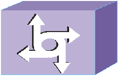

AN
TN
CN
{{businessDetailInfo.anVersion}}
vLan:{{businessDetailInfo.vLanText}}
{{businessDetailInfo.tnVersion}}

TN EDGEText
Gateway
{{businessDetailInfo.mbps}} Mbps/yyyG
{{businessDetailInfo.msText}} ms
Link Type:{{businessDetailInfo.linkType}}
{{businessDetailInfo.tnEndVersion}}
TN EDGEText
Gateway
vLan:{{businessDetailInfo.cnVlan}}
{{businessDetailInfo.cnVersion}}